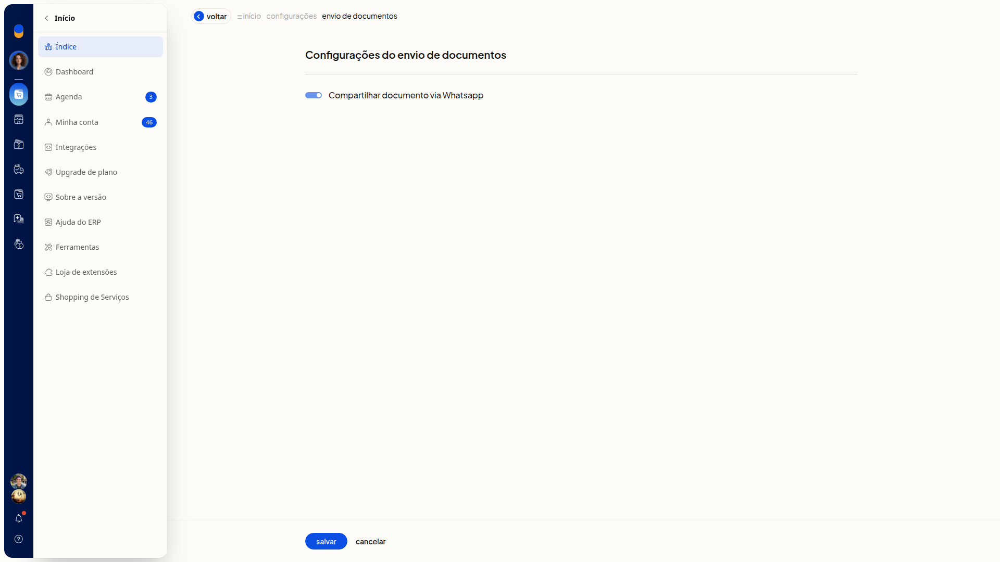
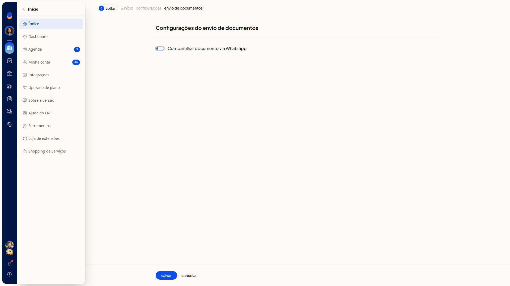

Enviar documentos por WhatsApp
No ERP da Olist, você liga ou desliga o compartilhamento de documentos pelo WhatsApp. Em Configurações do envio de documentos, o interruptor Compartilhar documento via Whatsapp define se os documentos podem ser compartilhados por esse canal.
Importante
- Marcar ou desmarcar Compartilhar documento via Whatsapp não abre outros campos.
- Se você clicar em Voltar sem salvar, a alteração não fica gravada.
Instruções
-
Acesse Configurações > Configurações ERP > Geral > Configurações do envio de documentos.

-
Marque Compartilhar documento via Whatsapp para ligar o compartilhamento ou desmarque para desligar.

-
Clique em Salvar. O compartilhamento de documentos pelo WhatsApp fica ligado ou desligado conforme o interruptor. O envio do documento pelo WhatsApp não é feito nesta tela.
Informações adicionais
Não há regras de envio por email nesta tela
Configurações do envio de documentos não contém campos de regras de envio por email. O único controle é o interruptor Compartilhar documento via Whatsapp.